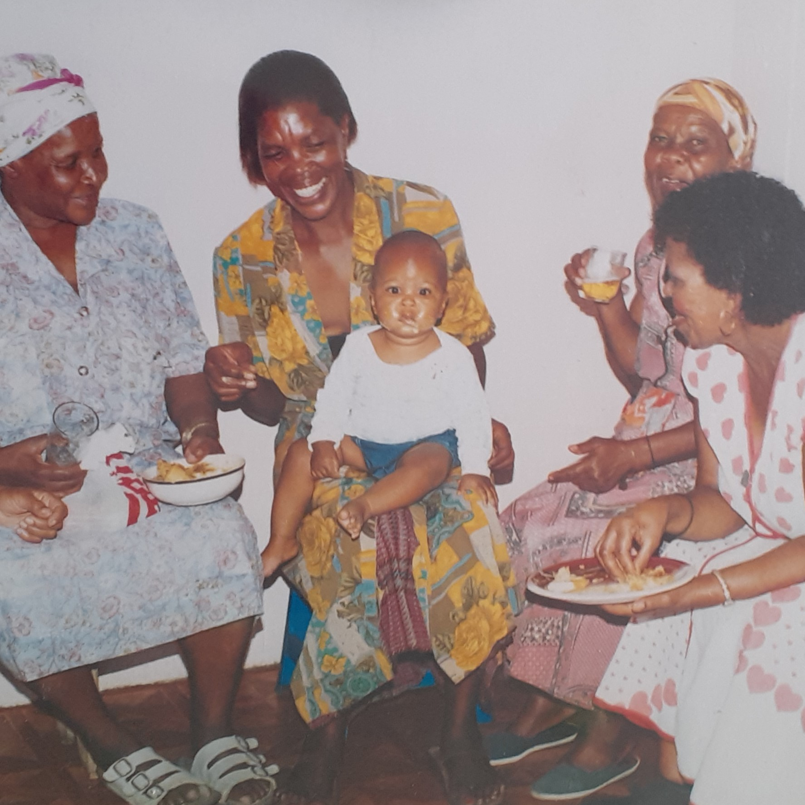

Lets do our part in improving the world through Engineering!
About Me
Hey There!I'm Thatohatsi MotlhammeMechatronics Engineer with a BSc Eng. from the University of Cape Town, where I excelled academically, earning numerous awards including the Dean's List and Peralex Electronics Prize. With hands-on experience from Mizana Engineering and UCT's Machines Laboratory, I've honed my skills in programming (Python, C, Java), circuit design, and software tools like KiCAD and SolidWorks. Driven by curiosity and a passion for innovation, I thrive on solving complex problems and pushing technological boundaries. Let's connect and explore how we can create transformative solutions together!
Experience
Electrical Engineer Vacation Work
University of Cape Town Machines Laboratory
June 2023 - July 2023
Analysed and modified a star-delta starter panel to reduce starting current of induction motors. Enhanced efficiency and corrected errors in control panel schematics using EPLAN software. Improved problem-solving and troubleshooting skills in electrical systems.
Circuit Design and Analysis
Panel Wiring
Mechatronics Engineer Vacation Work
Mizana Engineering and Services Pty (Ltd)
June 2022 - August 2022
Conducted diagnostics and repairs on induction motors, assembled and tested water pumps, and introduced a new in-house testing method for operational integrity. Developed advanced troubleshooting and problem-solving techniques.
Quality Control
Motor Maintenance
Admin
Tutoring Experience
University of Cape Town
February 2024 - June 2024
Embedded Systems I: Assisted students in understanding key concepts of digital systems and microcontroller programming. Provided guidance on practical exercises and projects, helping students apply theoretical knowledge to real-world applications.
July 2024 - November 2024
Embedded Systems II: Guided students through microprocessor architectures and embedded operating systems. Supported practical sessions involving the UCT STM board, helping students with simulation, programming, and system design. Facilitated project work, offering insights and assistance to enhance students’ learning experiences.
Embedded Systems
Projects